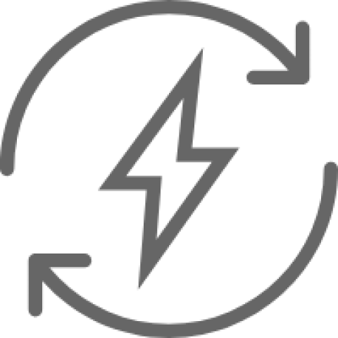
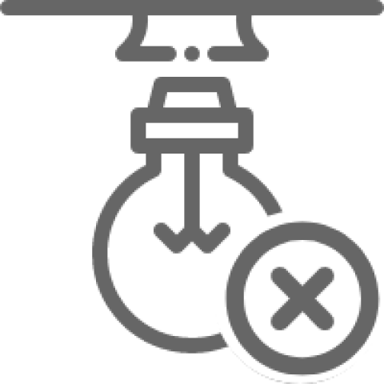
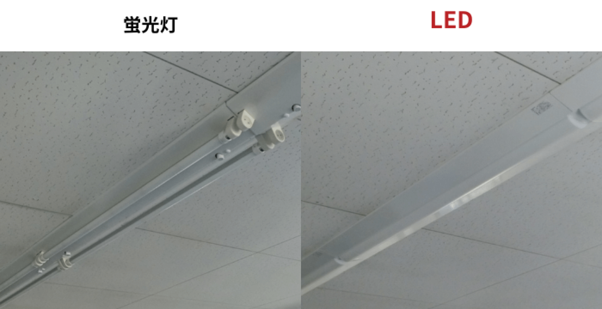
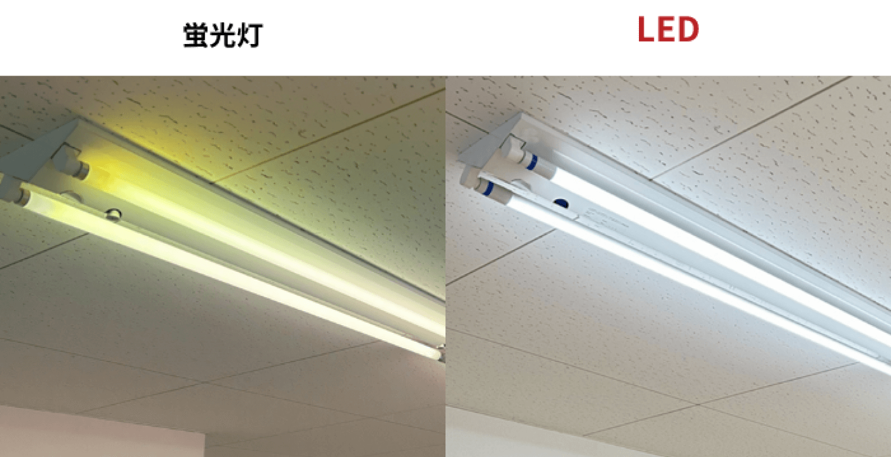
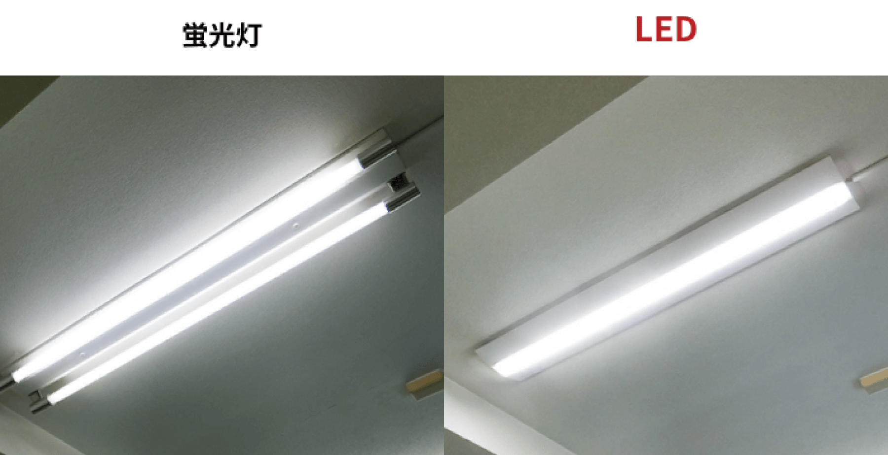
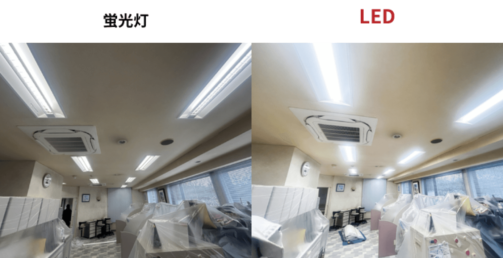
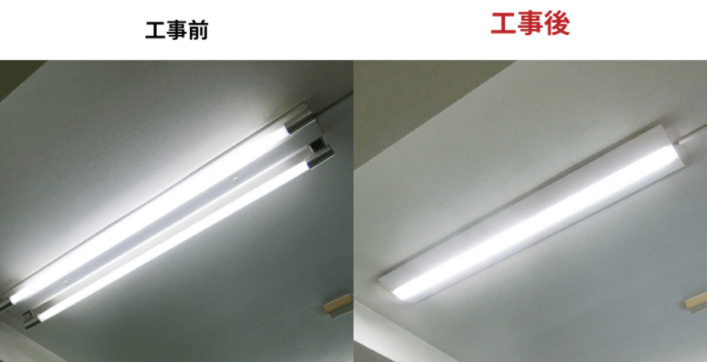
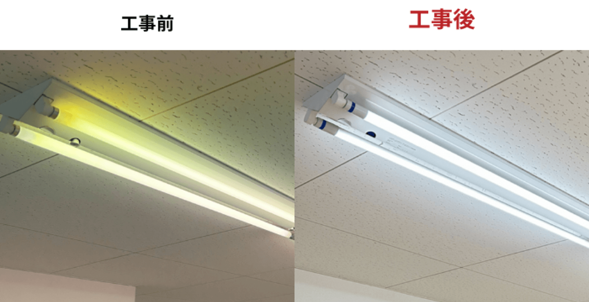

ジモデン登録の
電気工事店なら
蛍光灯からLED交換
10台
165,000円〜(税込)
LED器具

標準工事
処分費
※直付40W-2灯から同等の明るさのLEDへ交換の場合
蛍光灯からLED交換で知っておきたい 交換費用相場と 適正業者の探し方


蛍光灯からLEDへの交換
こんなメリットがあります
-
 50％から70％の消費電力削減
-
 ランプ交換・廃棄が不要に
-
明るくなって環境改善


蛍光灯からLEDへの交換費用と工事概要
Index
01 蛍光灯からLEDへの交換工事概要とメリット
1 蛍光灯からLEDへの交換は２通りある
LED 交換
２通りの工事方法
-
Ａ：器具全体をLEDへ変換
 - 丸型・コンパクト型蛍光灯は蛍光灯からLEDへの交換【誰でもわかる】自分でする？業者へ頼む？いくら？電気工事のプロが解説を参考にしてください。
- LED器具は明るさのグレードが多く、現状よりもかなり明るくすることも可能で、職場環境を改善できます
- 40W直管蛍光灯から同等の明るさのLED器具への交換により、消費電力を70％削減できる。Hf32W蛍光灯からは約50％の削減。
- LEDバイパス工事とくらべて工事費用が２倍程高くなる。
-
Ｂ：器具を流用するバイパス工事
 - 器具本体はそのまま流用して、器具内に設置されている安定器をバイパス（カット）させる電気工事を行い、LEDランプを設置する工事方法。
- 40W直管蛍光灯と同等の明るさのLEDランプ設置により、消費電力を70％削減できる。Hf蛍光灯からは約50％の削減。
- 器具全体をLED器具へ取替えるよりも工事費用を安くLED化できる。
ポイント！
LEDバイパス工事は器具本体を流用するため、器具耐用年数の目安である10年を超えることになります。ランプを取付けるプラスチック製のソケットは経年劣化により破損することがあり、ランプ落下の危険性も上がります。
2 蛍光灯からLED交換により削減できる電気代（低圧受電）
-
40W-２灯から同じ明るさのLED器具へ交換
 1台の消費電力 1台の年間電気代 蛍光灯：85W (安定器含む) 蛍光灯：5,100円/年間 LED ：25W LED ：1,500円/年間 - 蛍光灯からLEDへの変換により1台あたり3,600円の電気代削減
-
(高圧受電の場合×2/3となり、約2,400円の電気使用料の削減
＋デマンド0.06kwの削減)
ポイント！
- 直管蛍光灯は2027年末に生産終了
- LED化により蛍光灯の交換・廃棄が不要に
- 再エネ賦課金もあり、電気代は年々上昇
3 明るさアップで職場環境改善
-
LED器具交換は大幅に改善でき、LEDバイパス工事はやや改善
 - 蛍光灯を長期間使用すると、安定器やランプの劣化により100％の明るさで点灯していない場合が多く、同等の明るさのLED化でさえ、明るさが改善します。
- 器具ごと交換する場合のLED照明器具は、明るさのグレードが多いため、器具ごと交換により大幅に明るくすることができます。
- LEDバイパス工事では、LEDランプの照度に限度があるため、大幅に明るさを改善することはできません。
02
蛍光灯からLEDへの交換工事費用は２通りあり、
大きく異なる
LED 交換
２通りの工事費用
２つの工事方法では工事費用にかなり大きな差がありますが、LEDバイパス工事は蛍光灯器具を流用するため、器具の耐用年数を超えることになり、オススメはできません。
1 【直付】器具全体をLEDへ交換
-
40W-２灯から同じ明るさのLED器具へ交換
 10台で
165,000円(税込)LED器具
取替工事費
処分費
年間電気代削減金額36,000円(低圧受電)
下記の場合は別途費用がかかります
- 天井の高さが3m以上
- 埋込方, 防湿型
- 足場等が必要な場合
- 夜間作業
2 LEDバイパス工事
-
 10台(20本)で
121,000円(税込)LEDランプ
バイパス工事
処分費
年間電気代削減金額36,000円(低圧受電)
下記の場合は別途費用がかかります
- 天井の高さが3m以上
- 埋込方, 防湿型
- 足場等が必要な場合
- 夜間作業
03 直管蛍光灯は2027年末で製造・輸出入が廃止に！
2023年11月の水銀に関する水俣条約第５回締約国会議で、直管蛍光灯は2027年末で製造・輸出入廃止が決定
蛍光灯はますます不利に
- 2024年時点で蛍光灯は度重なるメーカー値上げにより、2020年より約2倍に高騰
- 2028年でも蛍光灯の在庫販売はありますが、先に廃止された水銀灯と同様に、かなり高額な蛍光灯をネットショップで買うことになるでしょう
- 蛍光灯は安定器と呼ばれる装置で蛍光灯を点灯させていますが、この安定器も20年程の使用で故障が増えてきます。安定器が故障した場合はランプを新品に交換しても点灯しません。
04 蛍光灯からLED交換工事のまとめ
1 2027年末で直管蛍光灯の製造・輸出入が廃止
- 蛍光灯は毎年のようにメーカーによる値上げ
- 2028年以降は高額で入手することに
2 蛍光灯からLEDへの交換費用一般的なオフィス・店舗
-
【直付】器具全体をLEDへ交換
10台で
165,000円(税込)LED器具
標準工事費
処分費
年間電気代削減金額36,000円(低圧受電)
-
全体を流用するLEDバイパス工事
10台(20本)で
121,000円(税込)LEDランプ
標準工事費
処分費
年間電気代削減金額36,000円(低圧受電)
3 蛍光灯からLEDへの交換のメリット
-
電気代の削減
蛍光灯40W-2灯からは約70％、Hf32W-2灯からは約50％の消費電力が減り、電気代を削減できます。
-
蛍光灯の交換
廃棄が不要LEDの発光部は約40,000時間の高寿命ですが、光らせるための装置の寿命は10年。蛍光灯の寿命は約10,000時間のため、ランプ交換・廃棄から解放されます。
-
明るさアップで
環境改善蛍光灯は長期の使用により、点灯が弱まっていることが多く、同等の明るさのLEDへの交換でも照度は20％～30％改善することが多い。
電気工事施行管理20年の経験
保有資格：第一種電気工事士、１級電気施行管理技士。
電気工事の経験20年、独立後は自力で作成したホームページ集客のみで法人設立後も3年間黒字を維持。